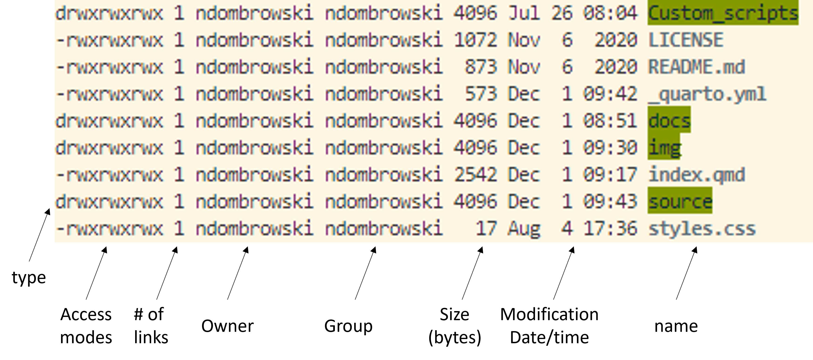

pwd3 Navigating the command line
3.1 pwd: Find out where we are
To get started, open your terminal, and get yourself oriented by typing your first command and then pressing enter:
The command pwd stands for print working directory. It tells you where you currently are in the file system, that is, which folder (directory) your shell is operating on right now. You should see something like this:
/Users/YourUserName
TipTip: Finding the Desktop on Different Systems
Your home directory (i.e. the directory you start in whenever you open the terminal) varies slightly across operating systems. Here’s how to locate yourself and connect to familiar locations like the Desktop:
macOS
- Your home directory is
/Users/YourUserName - To open the folder you are currently in Finder:
open . - Your desktop is at
/Users/YourUserName/Desktop
MobaXterm (Windows)
- Your home directory is
/home/mobaxterm - When using the portable version of Mobaxterm this directory is temporary and is deleted when you close MobaXterm. To make it permanent:
- Go to Settings –> Configuration –> General
- Under Persistent home directory, choose a folder of your choice
- To open the folder you are currently in the Windows File explorer:
explorer.exe . - Your Desktop is usually at:
/mnt/c/Users/YourUserName/Desktopor/mnt/c/Users/YourUserName/OneDrive/Desktop(when using OneDrive)
WSL2 (Windows)
- Your home directory is
/home/YourUserName - To open the folder you are currently in the Windows File explorer:
explorer.exe . - Your Desktop is usually at:
/mnt/c/Users/YourUserName/Desktopor/mnt/c/Users/YourUserName/OneDrive/Desktop(when using OneDrive)
If you want to access the Uva OneDrive folder and/or if your OneDrive folder name includes spaces (like OneDrive - UvA), use quotes around the path:
cd "/mnt/c/Users/YourUserName/OneDrive - UvA"3.2 ls: List the contents of a directory
Now that you know where you are, let’s find out what is inside that location, i.e. what files and folders can be found there. The command ls (short for list) shows the files and folders in your current directory. Type the following and press enter:
lsYou should see something like this (your output will vary depending on what’s in your directory):

The colors and formatting depend on your terminal settings, but typically:
- Folders (directories) appear in one color (often green or blue)
- Files appear in another (often white or bold)
If your directory contains many items, the output can quickly become overwhelming. To make sense of it, we can use options and arguments to control how commands behave.
3.3 The structure of a command
A command generally has three parts:
- A command name: The program you want to run, i.e.
ls - An option (or flag): A way to modify how the command behaves, i.e
-l(long format) - An optional argument: The input, i.e. a file or folder

Try the following command in your current directory to “List (ls) the contents of the current folder and show details in long format (-l)”:
ls -lAfter running this you should see a more detail list of the contents of your folder.In the example below you can now see additional information about who owns the files (i.e. access modes), how large the files are, when they were last modified and their name:

TipTip: Using ls in practice
Throughout this tutorial, you’ll notice that we will use ls frequently. There is a reason for that:
When working with data, sanity checks are essential, because it is easy to make mistakes, overwrite files, or lose track of where things are. Using simple commands like ls, pwd, wc, or grep help you verify what is happening to your files at every step of an analysis workflow.
These habits are not just for beginners, bioinformaticians rely on them constantly.
3.4 Getting help
At some point, you’ll want to know what options a command has or how it works. In this case, you should first check if manual pages (or man pages) are available for the command by typing man followed by the command name:
man lsThis opens the manual entry for the command ls. You can scroll through it using:
- ↑ / ↓ arrows or the space bar to move down
- b to move back up
- q to quit the manual
Not all commands come with such a manual. Depending on the program, there are a few common patterns you can try to get help:
man lsls --helpls -h
3.5 mkdir: Make a new folder
Before we start moving around, let’s first learn how to create new folders (also called directories). This is something we will do often, for example, to keep raw data, results, and scripts organized in separate places. The command we use for that is mkdir, which stands for make directory.
For now, we will use mkdir to create a project folder with the name data_analysis for this tutorial. Don’t worry about how to move into the folder yet, we’ll cover that in the next section.
# Move into the home directory (the starting point of your system)
cd ~
# Create a new folder called 'data_analysis'
mkdir data_analysis
# Check that the folder was created successfully
lsYou should see a new folder called data_analysis appears in the list. We will use this folder as our project folder for all exercises in this tutorial. Next, let’s make a new data folder inside the new data_analysis folder by typing the following:
# Make a data folder inside the data_analysis folder
# The `-p` option makes the parent directory (here: data), if it does not already exist
# It is useful to add `-p` when generating a folder inside a folder
mkdir -p data_analysis/data
# Check that the folder was created successfully
# Notice here, how we use ls with a flag and also with an optional argument?
ls -l data_analysis
TipTip: Commenting your code
Notice how I added # and some notes above each command?
Anything written after # in Bash is a comment. A comment won’t be executed, but it helps you (and others) understand what the command does.
In your own work, add short, meaningful comments above key steps. Avoid restating the obvious, instead, explain why you’re doing something or what it achieves.
3.6 cd: Move around folders
Now that we have our own project folder, let’s learn how to move around the file system.
The file system is structured like a tree that starts from a single root directory (that is also denoted as / in bash). All other folders branch out from this root directory. For example, we can go from the root directory, to the users folder and from there into the john folder.

There are two ways to specify a path to go the the portfolio folder:
- Absolute path: starts from the root (e.g.
cd /users/john/portfolio) - Relative path: starts from your current location (e.g.
cd portfolioif you’re already in/users/john)
Tip: It is generally recommended to use the relative path from inside your project directory. That makes your code more portable and still allows you to run the code even if your computer setup changes.
Let’s practice moving between folders (at each step, use pwd in case you feel that you get lost):
# Move into the data analysis folder
cd data_analysis
# Check where you are
pwdYou now should see something like /Users/Name/data_analysis. You can use the cd command in multiple ways to move around:
# Move into the data folder
cd data
# Move one level up (..), i.e. go back to the data_analysis folder
cd ..
# Quickly go back home (you now should be in the home directory)
cd ~
# Move multiple levels down at once
cd data_analysis/data
# Move two levels up and go back into the home directory
cd ../..
# And go back to the data_analysis folder
cd data_analysisIn the code above, the tilde symbol (~) is a shortcut for your home directory. It’s equivalent to typing the full absolute path to your home (e.g. cd /Users/YourName) but it is much faster to type.
TipTip: Command-line completion
Here, are some other tips for faster navigation (and less typos):
- Use Tab for autocompletion: type the first few letters of a folder name and press Tab.
- If there’s more than one match, press Tab twice to see all options.
- Use ↑ / ↓ arrows to scroll through previously entered commands
Tip: From now on try to use the Tab key once in a while so that you do not have to write everything yourself all the time.
QuestionTask
Familiarize yourself with these first commands and:
- Create a new folder inside your data_analysis directory called results
- Move into the results folder and confirm your location with
pwd - Move back inside the data_analysis folder
- Use
lsto confirm both results and data are there
AnswerClick to see the answer
mkdir results
cd results
pwd
cd ..
ls 3.7 wget: Download data
Next, let’s download a fasta file that contains the sequence of a 16S rRNA gene. This file will be useful to learn about some other commands. Below, we use the wget command to fetch a fasta file from an online website as follows:
# Download the example fasta file into the current directory
wget https://github.com/ndombrowski/MicEco2025/raw/refs/heads/main/data/LjRoot303.fasta.gzAfter you download any kind of data, it is always a good idea to do some sanity check to see if the file is present and know how large it is (or whether it is empty and something went wrong during the download):
# List files in long (-l) and human-readable (-h) format
# combining these two commands becomes -lh
# You should see that the file exists and is not empty
ls -lh LjRoot303.fasta.gz3.8 cp: Copy files
cp duplicates files or directories. It is a useful feature to keep our files organized and not have every single file in a single folder but instead to organize your files into folder categories (useful folders can be: data, scripts and results).
Let’s use cp to copy the downloaded file into data and to organize the data a bit better:
# Copy the file into data
cp LjRoot303.fasta.gz data/
# Show the content of both locations
ls -l
ls -l dataWhen running the two ls commands, we see that we now have two copies of LjRoot303.fasta.gz, one file is in our working directory and the other one is in our data folder. Having large files in multiple locations is not ideal since we will use unnecessary space. However, we can use another command to move the file into our data folder instead of copying it.
3.9 mv: Move (or rename) files
mv moves or renames files without creating a second copy:
# Move the file into data
mv LjRoot303.fasta.gz data/
# Verify
ls -l
ls -l dataNotice that mv will move a file and, without asking, overwrite the existing file we had in the data folder when we ran cp. This means that if you run mv its best to make sure that you do not overwrite files by mistake.
3.10 rm: Remove files and directories
To remove files and folders, we use the rm command. For example we could remove the LjRoot303.fasta.gz in case we don’t need it anymore:
# Remove the fasta file from the data folder
rm data/LjRoot303.fasta.gz
# Check if that worked
ls -l dataIf we want to remove a folder, we need to tell rm that we want to remove folders using an option. To do this, we use -r , which allows us to remove directories and their contents recursively.
Important
Unix does not have an undelete command.
This means that if you delete something with rm, it’s gone. Therefore, use rm with care and check what you write twice before pressing enter!
Also, NEVER run rm -r or rm -rf on the root / folder or any important path. And yes, we have these combinations online. Therefore, always double check the path or file name before pressing enter when using the rm command.
QuestionTask
Download another fasta file:
- Download the fasta file from GCF_000714595 with wget
- Use this path
https://github.com/ndombrowski/MicEco2025/raw/refs/heads/main/data/LjRoot303.fasta.gz
- Use this path
- Make sure that the new file stored in the data folder
- Check the file size (hint: use the -h option with ls)
AnswerClick to see the answer
# Download the file
wget https://github.com/ndombrowski/MicEco2025/raw/refs/heads/main/data/GCF_000714595.fasta.gz
# Move the file to the data folder
mv GCF_000714595.fasta.gz data
# Check the file size
ls -lh data/3.11 gzip: (Un)compressing files
You might have noticed that the file we downloaded ends with .gz. This extension is used for files that are compressed to make the file smaller. This is useful for saving files and saving space, but this makes the file unreadable for a human. To be able to learn how to read the content of a file, let’s learn how to uncompress the file first.
# Download another file
# Here, we use the -P option to directly download the file into the data folder
wget https://github.com/ndombrowski/MicEco2025/raw/refs/heads/main/data/LjRoot303.fasta.gz -P data
# Check that this worked
# You now should see two files
ls -l data
# Uncompress the file with gzip
# Here, we use -d to decompress the file
# (by default gzip will compress a file)
gzip -d data/LjRoot303.fasta.gz
# Check that this worked
# We now should see that one file is uncompressed (i.e. it lost the gz extension)
ls data3.12 Exploring file contents
Now that we have the uncompressed file we can use different ways to explore the content of a file.
3.12.1 cat: Print the full file
We can use cat print the entire file to the screen, this is useful for smaller files, but can get overwhelming for long ones where you would see hundreds of line just flying over the screen.
cat data/LjRoot303.fasta3.12.2 head and tail: View parts of a file
To only print the first few or last few lines we can use the head and tail commands:
# Show the first 10 lines
head data/LjRoot303.fasta
# Show the last 5 lines
# Here, the option -n allows us to control how many lines get printed
tail -n 5 data/LjRoot303.fasta3.12.3 less: View the full file
less let’s you view a file’s contents one screen at a time. This is useful when dealing with a large text file (such as a sequence data file) because it doesn’t load the entire file but accesses it page by page, resulting in fast loading speeds.
less -S data/LjRoot303.fasta- You can use the arrow Up and Page arrow keys to move through the text file
- To exit less, type
q
3.12.4 zcat: Decompress and print to screen
When we used gzip above, we decompressed the file and that allowed us to read the content of the fasta file. This is perfect for smaller files, but not ideal for sequence data since these files get large and we might not want to decompress these files as they would clutter our system.
Luckily, there is one useful tool in bash to decompress the file and print the content to the screen. zcat will print the content of a file to the screen but leave the file as is.
# Check the content of the data folder
# We should have one compressed and one uncompressed file
ls -l data
# Use zcat on the compressed file to view its content
zcat data/GCF_000714595.fasta.gz
# Check the content of the data folder
# We still should have one compressed and one uncompressed file
ls -l data
TipTip: Editing text files with
nano
You can also edit the content of a text file and there are different programs available to do this on the command line, one such tool is nano, which should come with most command line interpreters. You can open any file as follows:
nano data/LjRoot303.fastaOnce the document is open you can edit it however you want and then
- Close the document with
Control + X - Type
yto save changes and press enter
3.13 wc: Count things
Another useful tool is the wc (short for wordcount) command that allows us to count the number of lines via -l in a file. It is an useful tool for sanity checking.
wc -l data/LjRoot303.fastaWe see that this file contains 20 lines of text. For fasta files this is not very informative, but if you for example work with a dataframe with rows and columns where you filter rows using certain conditions this can become very useful for sanity checking.
3.14 grep : print lines that match patterns
The grep command searches for patterns in a file. We could for example use this to ask how many 16S rRNA gene sequences are in our fasta file by searching for the fasta header that always starts with a >. The basic grep syntax is grep "pattern" file. Here, “pattern” is the text you want to search for, and file is the file you want to search in. The double quotes allow us to include special characters (like >) safely.
grep ">" data/LjRoot303.fastaThis prints all lines that match the pattern (here: >). In a fasta file, > is used to label the sequence headers. Depending on your terminal, the matches might be highlighted, which makes them easy to spot.
If we only want to count the number of headers, we can use the -c option:
# Root303 contains 1 16S rRNA gene sequence
grep -c ">" data/LjRoot303.fasta
TipTip: The structure of sequence files
A sequence FASTA file is a text based format to store DNA or peptide sequences. It should always look something like this:
The header always starts with a > followed by descriptive information. In a new line the sequence data gets stored in either a single line or multiple lines. A fasta file can contain a single sequence or multiple sequences.
By convention the extension .fna is used to store fasta sequences from nucleotides and .faa is used to store fasta sequences from proteins. The extension .fasta can contain either nucleotide or protein sequences.
Another common extension is fastq. Fastq files are used to store sequencing data generated by sequencers and contain four lines of information: (i) the sequence header, (ii) the sequence itself, (iii) a separator and (iv) information about the quality of each single base pair in the sequence. They typically look something like this:

QuestionTask
- Uncompress the file for GCF_000714595
- Compare the number of 16S rRNA gene sequences for GCF_000714595 and LjRoot303
- What could it mean if one microbial species has more 16S rRNA gene sequences than another?
AnswerClick to see the answer
# Uncompress
gzip -d data/GCF_000714595.fasta.gz
# Count the number of contigs
# LjRoot303 has 1 and and GCF_000714595 9 16S rRNA gene sequences
grep -c ">" data/LjRoot303.fasta
grep -c ">" data/GCF_000714595.fastaAnswer for question 3:
Bacteria can carry multiple copies of the rRNA operon (16S–23S–5S). A higher copy number is often associated with fast-responding, fast-growing life strategies (more ribosomes → faster protein synthesis under nutrient-rich conditions).
This can cause problems in, for example, 16S rRNA gene amplicon analyses:
- A single organism may produce multiple slightly distinct 16S sequences, inflating apparent diversity
- Species with higher 16S copy number will produce more amplicon reads per cell. So raw read counts overestimate their true cell abundance unless you correct for copy number (which is difficult)
3.15 Working with multiple files
So far, we have worked with single files. In practice, sequencing data often comes as multiple files, for example, one file per strain or per sample. Let’s practice handling several files at once. Let’s begin by getting more genomes and not only download 16S sequences from strains isolated from Lotus japonicus (files with Lj prefix) but also sequences from strains coming from a human background (files with GCF prefix):
Hint: If you downloaded one of the genomes in the exercise before, then you don’t need to run this wget command.
# Download some more data
wget https://github.com/ndombrowski/MicEco2025/raw/refs/heads/main/data/GCF_000009425.fasta.gz -P data
wget https://github.com/ndombrowski/MicEco2025/raw/refs/heads/main/data/GCF_000253315.fasta.gz -P data
wget https://github.com/ndombrowski/MicEco2025/raw/refs/heads/main/data/LjRoot59.fasta.gz -P data
# Check what was done
ls -lh dataWe now should have 5 files, 3 of which are still compressed.
TipHint: Downloading many files with a for loop
Once you understand how to use wget, you can easily scale it up to download multiple files automatically using a for loop.
For example, suppose you have a list of all the accessions that were used in the lab experiments in a file called accessions.txt, one accession per line:
GCF_000009425
GCF_000253315
GCF_000714595
GCF_014058685
LjRoot303
LjRoot44
LjRoot59
LjRoot60
Root401
Root68
Root935You can then loop through all URLs and download them into the data folder like this:
# make a playground folder
mkdir playground
# Download all genomes at once
for accession in $(cat accessions.txt); do
wget https://github.com/ndombrowski/MicEco2025/raw/refs/heads/main/data/${accession}.fasta.gz -P playground
doneHere’s what happens:
$(cat accessions.txt)reads all lines from the filefor accession in ...goes through each line one by one and stores an accession name in theaccessionvariablewget github_path/${accession}.fasta.gz -P playgrounddownloads the compressed fasta file for each accession into the playground folder. Here, the${accession}will get replaced with one line inaccessions.txt
You can use this same loop structure to run any command on multiple files automatically. This is one of the main reasons the CLI is so powerful. For example, you could in one command count the number of headers in all your fasta files:
# Download all genomes at once
for accession in $(cat accessions.txt); do
echo $accession
zcat playground/${accession}.fasta.gz | grep -c ">"
doneYou can also format this more nicely if you really want to but this is outside of the scope of this tutorial. A more detailed explanation about for-loops can be found here.
3.15.1 Wildcards (*): Match multiple files
Imagine we want to uncompress all the new files. Typing every a gzip command for every file will get tedious and you risk mistyping names. Wildcards are another tool that you can use to work with groups of files using pattern matching. One of the most useful wildcard is *, which is used to search for a particular character(s) for zero or more times. For example, *.txt would find all files with the .txt extension.
# List all files inside the data folder that end with gz
# We should see only 3 files
ls -l data/*gz
# List all uncompressed Lotus fasta files inside the data folder
# using `Lj*.fasta*` means we look for filenames that
# start with Lj, are followed by any number of characters and end with .fasta
ls -l data/Lj*.fastaWe can use Wildcards with every bash command and, for example, use it to unzip every file at once:
gzip -d data/*gz
# Check if that worked
ls -lh data3.15.2 cat and > : Combining and saving files
The cat command doesn’t just print files, it can also concatenate (join) multiple files into one. For example, we might want to combine all fasta sequences for the Lotus (Lj) strains and store the output in a new file called lotus.fasta in the results folder (a folder you should have generated in an earlier exercise).
# Combine the Lotus fasta files into one
# and store the output of the cat command in a new file
cat data/Lj*.fasta > results/lotus.fastaHere:
cat data/Lj*selects all files in the data folder that start withLjand end with.fasta.>tells the shell to write the combined output into a new file that will be called lotus.fasta
CautionImportant: Be careful with >
The > operator overwrites files without asking. If you want to add (append) to an existing file instead of replacing it, use >>:
Whenever you combine or modify files it is a good idea to do some sanity checks. Luckily, we already learned about useful ways to do this:
# Check how many 16S sequences are found in individual Lotus strains
grep -c ">" data/Lj*
# Check how many 16S sequences files are in concatenated file
# Important: the numbers should add up with the numbers from the command above
grep -c ">" results/lotus.fasta
QuestionQuestion
- Combine the 16S rRNA gene sequences from human-associated strains (GCF Prefix) into a new file and store this file in the results folder
- Count the total number of 16S sequences in the individual and the combined file
AnswerClick to see the answer
# Combine
cat data/GCF*.fasta > results/human.fasta
# Count
grep -c ">" data/GCF*.fasta
grep -c ">" results/human.fasta3.16 Pipes
So far, we’ve run one command at a time. But often, you might want to combine commands so that the output of one becomes the input of another. That’s what the pipe (|) does. It allows us to chain simple commands together to do more complex things.
For example, we might want to ask how many sequences all human-associated strains have together but might not want to store a concatenated file to do so. Here, we could do the following instead:
# Combine two files and count the total number of 16S sequences in the combined file
cat data/GCF*.fasta | grep -c ">"Here:
cat data/GCF*.fastaconcatenates fasta files from all human-associated strains- The pipe (
|) sends the combined contigs directly to thegrepcommand grep -c ">"only counts how many headers are found in the combined file